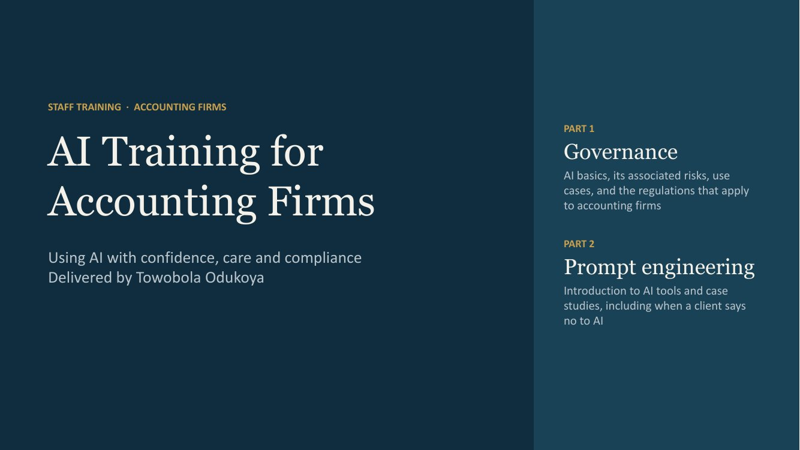

I designed and delivered this AI training for staff at a UK accounting practice, and have rebuilt it here as a firm-agnostic version that any accounting firm can use. It is written for accountants, bookkeepers and client-facing staff, not technologists: plain language, practical examples, and a clear line on what should never go into an AI tool.
Audience
Staff at UK accounting and bookkeeping firms
Format
23-slide session with discussion and impact survey
Focus
Governance, client data and regulatory risk
What It Covers
- What AI is, and how generative AI differs from the automation firms already rely on
- How accountants are using AI today, with practical examples for each use case
- Personal data under UK GDPR, and how client data can be exposed at each stage of using an AI tool
- The key risks: hallucinations, bias, confidentiality breaches, over-reliance and AML failures
- Who regulates AI use in UK accountancy (ICO, professional bodies as AML supervisors, HMRC and the FCA) and what is at stake
- Professional standards, drawing on the PCRT guidance on the ethical use of AI tools (January 2026)
- A five-step approach to adopting AI safely, with a team discussion and a training impact survey
AI should be viewed as an assistant, not an authority. It amplifies what is already there: good or bad.
Preview the Deck
On mobile, use “View the deck (PDF)” above for the best experience.
Work With Me
I'm happy to adapt and deliver this session for your team, or to talk about AI governance, data protection and AML compliance more broadly. Get in touch.